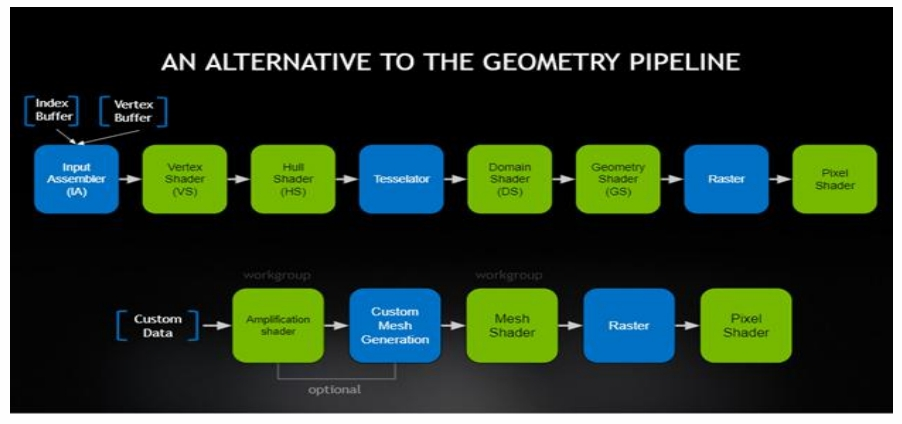
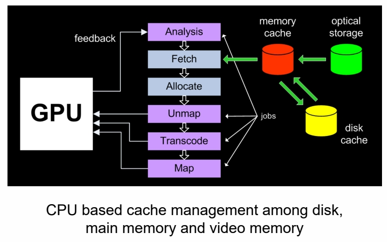
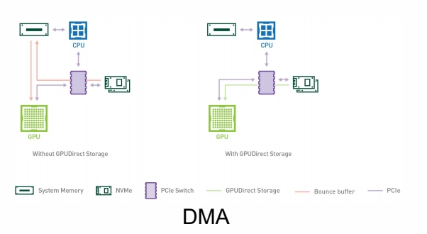
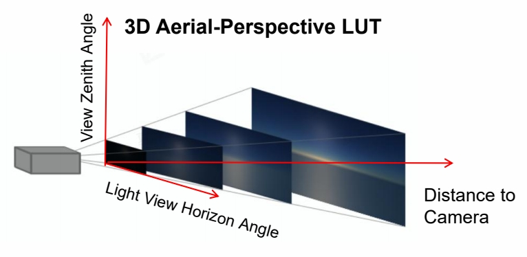

P5
Terrain Rendering
地形系统
P27
Mesh Shader Pipeline
- Amplification Shader Stage - decides how many Mesh shader groups to run and passes data to those groups
- Mesh Shader Stage - produces a semi-regular tessellation pattern for each patch, and outputs comprise vertices and primitives

只持 DX12 及以上。
可以基此实现动态高度的地形效果。
P45
Virtual Texture
P46
这个方法涉及 GPU、内存、硬盘之间切换。

新显卡的方式：
- DirectStorage: 硬盘数据只是从内存过一下，到 GPU 才解压，提升传输效率。
- DMA：硬盘直接往 GPU 写数据。

Production Friendly Quick Sky and Atmosphere Rendering
Simplify Multi-scattering Assumption
- Scattering events with order greater or equal to 2 are executed using an isotropic phase function
- All points within the neighborhood of the position we currently shade receive the same amount of second order scattered light
- Visibility is ignored
$$ G_{n+1}=G_n\ast f _{ms} $$
$$ \mathbf{ F_{ms}=1+f_{ms}+f^2_{ms}+f^3_{ms}+\dots = \frac{1}{1-\mathbf{f_{ms}} } } $$
$$ \mathbf{\Psi _ {ms} }=\mathbf{L_ {2^{nd}order} F_ {ms} } $$
假设“散射是各向同性的”。那么，“均匀的入射光到均匀的出射光”的过程，只是一个简单的能衰减过程。所以只需要求出衰减比例，每 bounce 一次就按这个比例衰减就可以了。
P83
Fixed view position and sun position to remove 2 dimensions out of LUT

对上文中的 LUT 的简化：
(1) 假设人所在的高度不变，去掉 height 维
(2) 假设太阳位置不变，去掉入射角的维度仅留下出射光的维度(天顶角、环角)
P84
- Generated a 3D LUT to evaluate aerial-perspective effects by ray marching

这个方法不保证物理正确，但好处是：
(1) 艺术家友好
(2) 可以创造异星世界效果
(3) 硬件友好
P85
Good Balance of Performance and Effect
- Scalable from mobile to high-end PCs

Performance for each step of method, as measured on PC (NV 1080) and a mobile device (iPhone 6s)